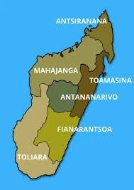

🌍 Provinces et Régions de Madagascar
Madagascar compte 6 provinces subdivisées en 22 régions, offrant une variété culturelle et géographique unique à travers l’île.
🏛 Antananarivo
Analamanga, Alaotra-Mangoro, Vakinankaratra, Itasy
🌴 Toamasina
Atsinanana, Analanjirofo, Atsimo-Atsinanana
🌿 Fianarantsoa
Haute Matsiatra, Ihorombe, Vatovavy Fitovinany
🌅 Mahajanga
Boeny, Melaky, Betsiboka
🏖 Antsiranana
Diana, Sava
🐠 Toliara
Atsimo-Andrefana, Androy, Anosy
Ces provinces et régions représentent la richesse et la diversité de Madagascar, allant des hauts plateaux aux côtes paradisiaques.
